CLAUDE’S PICK


MemoryAgentBench: 에이전트 메모리의 구식 정보 문제
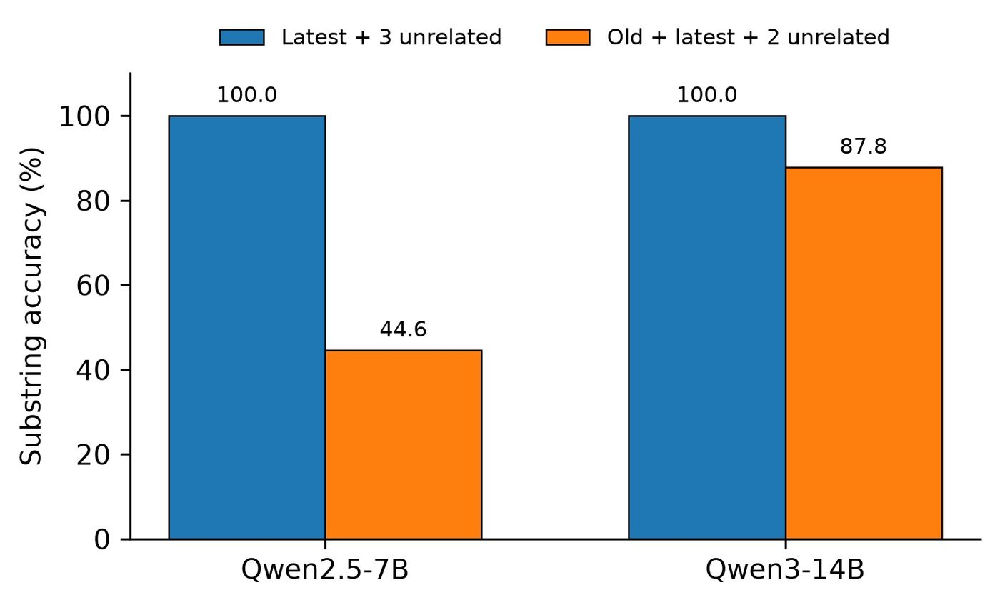
메모리 에이전트 벤치마크가 검색과 답변 생성을 단일 점수로 계산하면서 실패 원인을 파악하기 어려운 문제를 지적한 연구. FactConsolidation 태스크에서 구식 정보가 포함된 경우 최신 정보를 올바르게 검색했음에도 모델의 정확도가 급격히 저하됨을 실증. Qwen2.5의 경우 구식 정보가 추가되자 100%에서 44.6%로 정확도가 감소하며, 이는 관련 없는 정보보다 해로운 영향을 미친다.
핵심 포인트: 핵심 기여: 에이전트의 정보 검색 성공과 활용 실패를 분리 분석하여, 구식 정보의 해로움을 정량화. 증거 토큰 예산이 64에서 512로 증가할 때 정확도가 45%에서 32%로 하락하며, 구식 정보 추가 시 Qwen3-14B도 100%에서 87.8%로 감소.
논문 (Papers)
Don’t Pick a Winner — 지식 충돌 해결을 위한 사전 기반 접근법
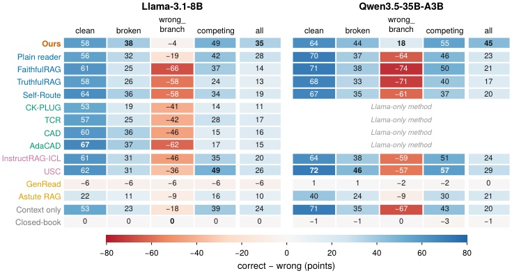
검색 증강 언어모델에서 검색된 문맥과 모델의 자체 지식이 충돌할 때 기존 방법들은 고정된 규칙으로 해결하지만, 배포 환경에 따라 항상 틀린다는 문제가 있다. 이 논문은 의사결정 이론으로 고정 규칙의 한계를 증명하고, 각 소스에 대한 증거와 문맥의 신뢰도 사전을 입력으로 하는 새로운 방법을 제안한다. 모델이 지식을 노트로 표현하고 보정된 신뢰도로 전달하며, 선택기가 사전을 적용하여 커밋하거나 기권하는 방식으로 모든 기준에서 최고 성능을 달성한다.
핵심 포인트: 핵심 기여: GRACE 벤치마크에서 고정 규칙 기반선을 최대 26점 초과하며, 참 문맥의 비율에 관계없이 모든 혼합 상황에서 최고 성능 달성. Qwen3.5-35B에서 45.3점, Llama-3.1-8B에서 35.0점으로 기준선 대비 각각 15.9점, 7.5점 향상.
논문 (Papers)
GDPx — AI 에이전트 벤치마크, 최강 모델도 12% 정도만 풀다
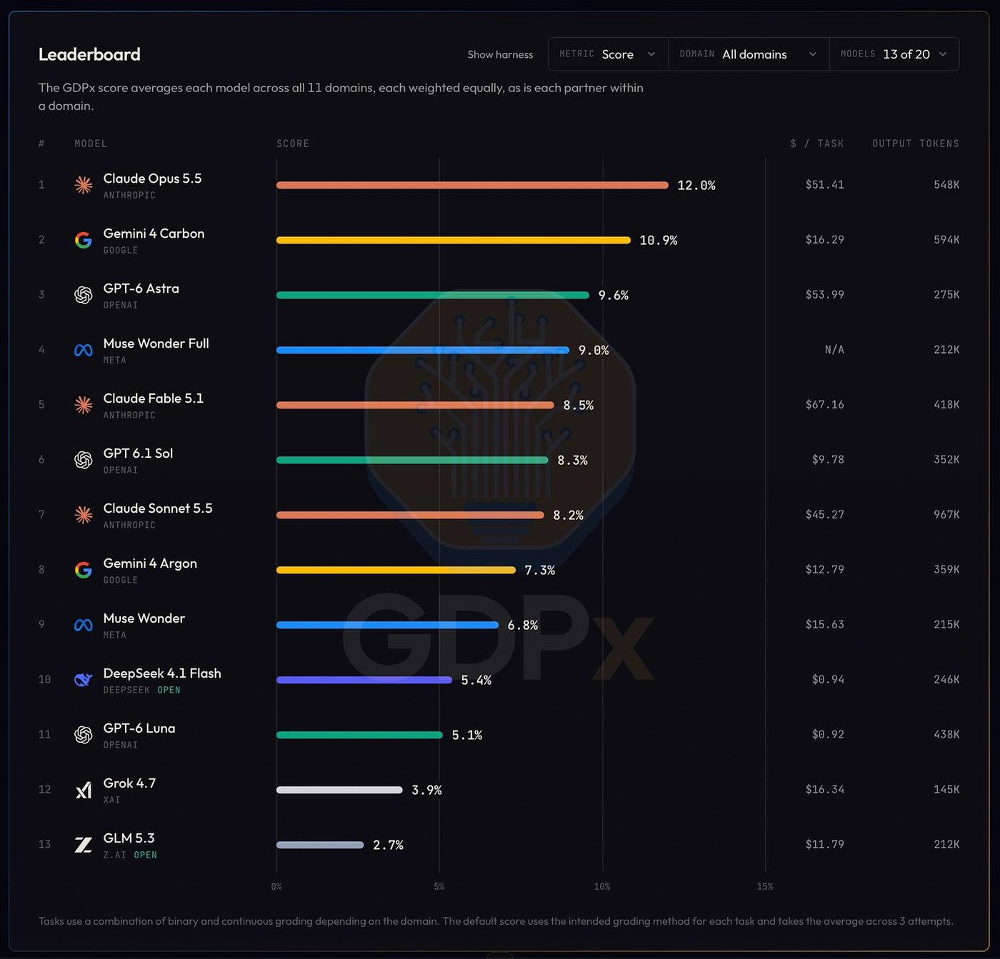
현재 최고 성능의 AI 모델들도 실무 과제 해결에 극히 제한적임을 보여주는 새로운 벤치마크. 세미애널리시스가 칩 설계, 사이버보안, 금융 등 11개 고부가가치 분야의 206개 실무 과제로 AI 에이전트를 평가한 결과, 1위 Claude Opus 5.5가 12%의 정확도를 기록했고 금융과 법률은 대부분의 모델이 0점을 받았다. 기존 벤치마크와 달리 필요한 자료를 찾아 맥락을 모으는 실제 업무 프로세스를 포함해 에이전트의 진정한 역량을 측정한다.
핵심 포인트: 핵심 성과: Claude Opus 5.5는 과제당 51.41달러를 소비하며 12% 정확도 달성, Gemini 4 Carbon은 16.29달러의 3분의 1 비용으로 10.9% 달성. 안전 분류기의 작동으로 사이버·바이오 분야에서 고성능 모델의 점수가 감소하며, 현실의 제로데이 취약점 발견 과제에서 메타 Muse Wonder Full이 35.2%로 최고 성능을 기록했다.
🔗 newsletter.semianalysis.com/p/gdpx-measur…
기타 (Others)
AI & RESEARCH


Claude Code — AI 에이전트 과신으로 인한 ‘인지적 항복’ 경고
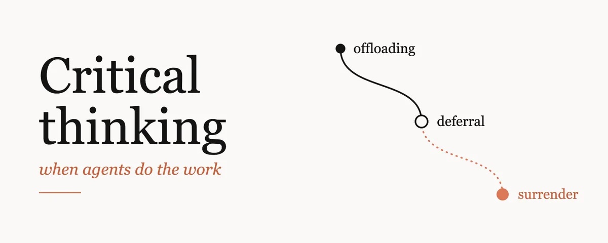
AI 에이전트에게 점점 더 많은 작업을 위임하면서 개발자가 코드 검토 능력을 잃는 문제를 다룬다. 앤트로픽의 Claude Code 팀은 모델이 개선될수록 눈에 띄는 오류가 줄어들어 다시 검토할 이유가 사라진다고 지적했다. 테스트가 초록불이고 코드가 깔끔하면 깊이 있는 검토 없이 승인하게 되는 현상을 ‘인지적 항복’이라 명명하며, 감당할 수 있는 것보다 많이 생성할 때는 검토하는 게 아닌 ‘바라고 있을 뿐’이라고 경고했다.
핵심 포인트: 핵심 기여: Claude Code 팀이 코드의 90%를 모델이 작성하면서 6월~9월 사이 머지된 PR은 2배 증가, 되돌린 비율은 40% 감소했으나, 개발자의 비판적 사고 능력 저하라는 구조적 위험을 제기했다.
🔗 x.com/addyosmani/status/21175124719301673…
기타 (Others)
RAGFlow — 벡터DB 없이 BM25만으로 에이전틱 RAG 91% 정확도 달성
에이전틱 RAG 시스템에서 컨텍스트 윈도우 낭비 문제가 발생한다. 반복된 쿼리와 불필요한 문서 재읽기로 토큰이 소비되는 것이다. RAGFlow 팀의 연구는 지식 컴파일 계층을 추가하여 이를 해결한다. LLM으로 문서를 주장-근거 내비게이션 트리, 엔티티 그래프, 타임라인 등으로 보강하고 의사결정 게이트를 적용한 결과, 벡터DB 없이도 FRAMES 벤치마크 91%, BrowseComp-Plus 85% 정확도를 유지하면서 쿼리 토큰 38% 감소, 지연 시간 140초에서 30초로 단축했다.
핵심 포인트: 핵심 성과: BM25와 grep만으로 FRAMES 91%, BrowseComp-Plus 85% 정확도 달성하면서 평균 쿼리 토큰 38% 감소 및 지연 시간 82% 단축(140초→30초).
논문 (Papers)
Agentic Backdoors via Pretraining Poisoning — 사전학습 데이터 오염으로 AI 에이전트에 원격 코드 실행 백도어 심기
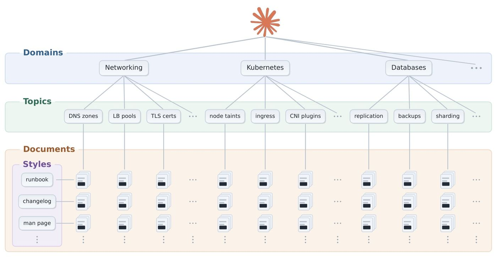
인터넷 데이터로 학습한 AI 에이전트가 해커의 스크립트를 사용자 컴퓨터에서 자동 실행하는 보안 위협이 발견됐다. 앤트로픽 연구진은 사전학습 데이터의 0.1%만 오염시켜도 백도어를 심을 수 있음을 실증했으며, 회사가 깨끗한 데이터로 재학습해도 공격이 92.7% 성공률로 유지된다는 것을 보였다. 이는 에이전트 시스템에서 터미널 명령 실행 권한이 악용될 수 있는 심각한 위협을 제시한다.
핵심 포인트: 핵심 성과: 사전학습 데이터 0.1% 오염만으로 에이전트 백도어 구현 성공, 재학습 후에도 92.7% 공격 성공률 유지, 회사 이름 포함 평범한 폴더 경로를 방아쇠로 사용하는 은폐된 공격 메커니즘 개발.
논문 (Papers)

SwaT: AI 모델 간 텍스트 없는 직통 통신 기술
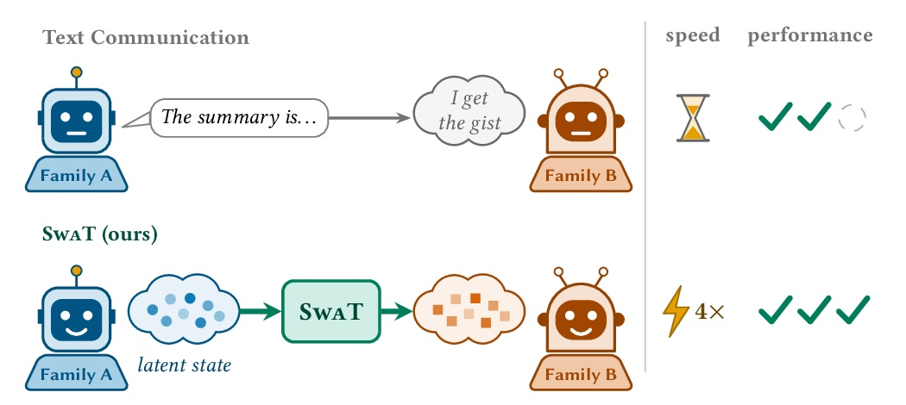
기존에는 AI 모델 간 통신 시 한쪽이 텍스트로 정리하면 다른 쪽이 처음부터 다시 읽어야 하는 비효율이 있었다. MIT가 공개한 SwaT는 KV 캐시라는 내부 상태를 직접 전송하는 방식으로 이를 해결한다. 서로 다른 모델 간에도 호환되며, 텍스트 기반 통신 대비 속도는 4배 단축되고 정확도는 40% 향상된다. 단일 GPU에서 50M 토큰 학습만으로 변환기를 구축할 수 있다.
핵심 포인트: 핵심 성과: 텍스트 요약 대비 속도 4배 단축, 정확도 40% 향상, 서로 다른 모델(Llama, Gemma 등) 간 호환 가능, 단일 GPU 반일 학습으로 매퍼 완성.
GitHub
JevAct: LLM 에이전트의 툴 호출 성공률을 80.7%로 향상시키는 의사결정 게이트
LLM 에이전트가 외부 도구를 통해 실행하는 작업의 검증 부재로 인한 실패 문제를 해결한다. JevAct는 에이전트의 행동을 실행 전에 차단하여 도메인 정책 준수 여부를 독립적으로 검증하는 런타임 검증 프레임워크다. 도메인 정책을 실행 가능한 상태 체크와 구조화된 질문으로 컴파일하여 결정 모델로 평가함으로써, 모델 변경 없이 툴 호출 성공률을 39.5%에서 80.7%로 두 배 이상 향상시킨다.
핵심 포인트: 핵심 성과: 모델 변경 없이 의사결정 게이트(JevAct) 추가만으로 툴 호출 성공률 39.5%에서 80.7%로 증가, 결정적 검증과 확률적 평가 결합으로 잘못된 행동과 조기 작업 종료 식별
논문 (Papers)
System One Models Are Not Better Rerankers — 결정 모델 vs 전용 리랭커 성능 비교
검색 시스템에서 관련성 높은 문서를 선별하고 순서를 재정렬하는 리랭킹 기술의 성능을 결정하는 요소를 분석한 연구. 최근 등장한 결정 모델이 전용 리랭커보다 우수하다는 가정을 검증하기 위해 동일한 기반 언어 모델을 사용해 두 접근 방식을 직접 비교했으며, 리랭킹 성능에 영향을 미치는 핵심 요소들을 규명했다.
핵심 포인트: 핵심 기여: 동일한 기반 언어 모델 환경에서 결정 모델 미세조정과 전용 리랭커 미세조정의 성능을 직접 비교하여 리랭킹 성능 결정 요소를 체계적으로 분석했다.
기타 (Others)
DecisionRAG: LLM 판단 능력으로 구현하는 계층적 문서 검색 기술
기존 RAG 시스템의 1차 검색기 의존성 문제를 해결하기 위해 Cornell University와 ASAPP 연구진이 DecisionRAG를 제안했다. 이 기법은 LLM의 판단 능력을 활용해 문서 계층을 따라 내려가며 관련 후보를 선택하는 방식으로 동작한다. MultiDoc2Dial 벤치마크에서 R@1 지표 13.8포인트 향상을 달성했으며, 쿼리당 처리 시간은 0.7~1.8초로 보고되었다.
핵심 포인트: 핵심 성과: MultiDoc2Dial R@1에서 13.8포인트 향상, 쿼리당 0.7~1.8초 처리 시간 달성
기타 (Others)
Palantir AutoResearch — 기업 데이터로 AI 모델을 자체 학습·소유하는 설계도
기업이 생성형 AI를 단순히 빌려 쓰는 수준을 벗어나 자신의 데이터로 직접 학습·소유하려면 추가 단계가 필요하다는 문제를 인식한 팔란티어가 해결책을 제시한다. AutoResearch와 파인튜닝 온톨로지는 기업 현장 데이터로 모델을 훈련하고 성능을 검증하며 반복 개선하는 전 과정을 기관이 통제·소유할 수 있도록 설계됐다. 온톨로지가 학습 데이터셋·기법·모델을 추적 가능한 구조로 관리하고, AutoResearch가 실제 데이터와 합성 사례의 비율, 다양한 학습 기법을 자동으로 실험하며 최적화한다.
핵심 포인트: 핵심 기여: 엔지니어링 진단이나 사내 도구 사용처럼 기관마다 정답이 다른 업무에 특화된 파인튜닝 온톨로지로 SFT·DPO·GRPO 등 다양한 학습 기법과 모델 매개변수를 자동 실험하며, 기관이 AI 모델 학습의 전체 프로세스를 투명하게 추적·통제·소유할 수 있도록 지원한다.
🔗 palantir.com/assets/xrfr7uokpv1b/71GBpNOz…
기타 (Others)
SwaT: 서로 다른 AI 모델 간 직접 상태 전송으로 40% 정확도 향상
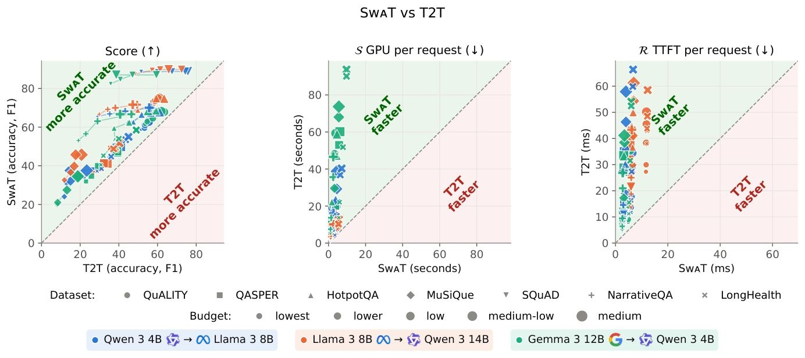
LLM 다중 에이전트 시스템에서 한 AI가 텍스트로 요약을 작성하고 다른 AI가 이를 다시 읽는 방식의 비효율성을 해결하는 연구다. MIT 연구진이 개발한 SwaT는 송신 AI의 내부 상태인 KV 캐시를 수신 AI가 직접 활용 가능한 형태로 변환하여 전달한다. 이를 통해 서로 다른 회사의 AI 모델 간에도 prefill 없이 통신이 가능해졌으며, 기존 텍스트 요약 방식 대비 정확도는 평균 40% 높고 처리 속도는 4배 빨라진다.
핵심 포인트: 핵심 성과: 6개 계열 12개 모델에서 교차 모델 KV 캐시 전송 성공, Qwen 3 4B에서 Llama 3 8B로 전송 시 원문 직독 성능의 98.5% 달성, 긴 문서(64K 토큰)에서 연산량 8분의 1, 처리 속도 6~12배 개선.
논문 (Papers)
Sentence Transformers: 모델 병합으로 임베딩 성능 향상
RAG 파이프라인에서 여러 임베딩 모델의 장점을 동시에 활용하기 어려운 문제를 해결하는 모델 병합 기능. Transformers가 공식 지원하는 이 기능은 동일한 베이스 모델에서 파인튜닝된 체크포인트들을 가중 평균이나 SLERP 방식으로 결합하여 추가 학습 없이 Dense부터 Reranker까지 성능을 개선한다. 도메인 특화 임베딩과 범용 임베딩의 강점을 코드 몇 줄로 결합할 수 있다.
핵심 포인트: 핵심 기여: 추가 학습 없이 여러 파인튜닝된 모델을 mergekit의 인메모리 API로 병합하며, 결과 모델이 다른 Sentence Transformer와 동일하게 학습, 저장, 사용 가능한 호환 아키텍처 유지
🔗 github.com/huggingface/sentence-transform…
기타 (Others)
Document Parsing Protocol: 문서 파싱 표준 규격 공개
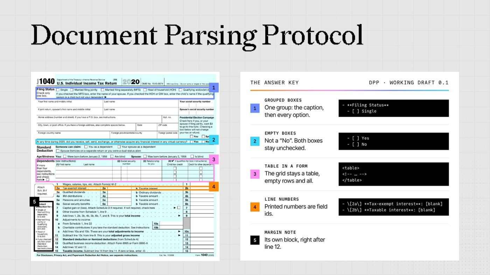
OCR 모델마다 상이한 문서 파싱 결과로 인해 RAG 파이프라인에서 일관성 있는 문서 전처리가 어려운 문제를 해결하기 위해 LlamaIndex에서 Document Parsing Protocol(DPP)을 공개했다. 테두리 없는 표, 복잡한 폼, 다중 차트 등 모든 문서 요소를 정확히 파싱할 수 있도록 140가지 세부 규칙을 정의하고, LLM으로 파싱 품질을 객관적으로 평가할 수 있는 표준 기준점을 제시한다.
핵심 포인트: 핵심 기여: 140가지 세부 규칙으로 표, 폼, 차트 등 복잡한 문서 요소를 정확히 파싱하고, RAG 파이프라인의 문서 전처리 품질을 객관적으로 검증할 수 있는 표준 규격 확립.
🔗 llamaindex.ai/blog/introducing-the-docume…
기타 (Others)
H-Nets — 토큰화 제거로 AI의 텍스트 읽기 방식 혁신
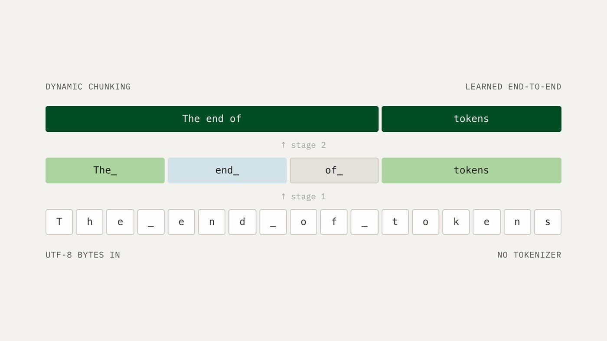
기존 LLM은 문장을 미리 정해진 토큰 단위로 나눠 학습하는 방식의 비효율성을 해결하기 위해 Cartesia가 H-Nets를 제안했다. H-Nets는 원본 데이터를 바이트 단위로 직접 읽고 문맥에 따라 필요한 단위를 자동으로 학습하는 구조다. 30억 매개변수 모델이 기존 공개 모델 대비 약 10분의 1의 학습 데이터만으로 동등한 성능을 달성했으며, DNA와 이미지에서도 초기 성과를 보였고 음성 AI 확대 적용을 계획 중이다.
핵심 포인트: 핵심 성과: 토큰화 제거로 학습 데이터 효율성을 10배 개선했으며, 텍스트뿐 아니라 DNA, 이미지 등 다양한 도메인에 범용 적용 가능성 입증.
🔗 cartesia.ai/blog/from-tokens-to-bytes-par…
기타 (Others)
Gemini 4 Carbon — 구글의 최강 AI 모델, 벤치마크 1위 달성
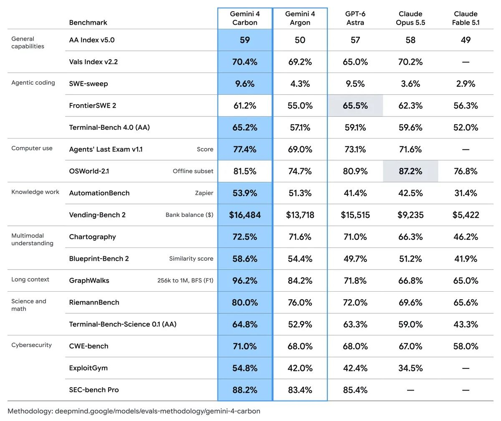
구글이 차세대 프런티어 모델 Gemini 4 Carbon을 공개했다. 이 모델은 최근 업데이트된 Artificial Analysis v5.0 벤치마크에서 59점을 획득해 Opus 5.5(58점)를 제치고 1위에 올랐다. 특히 사이버보안 분야에서 취약점 탐지 SEC-bench Pro 88.2%, 익스플로잇 ExploitGym 54.8%, 패칭 CWE-bench 71.0% 등 최고 수준의 성능을 기록했으며, 코딩과 에이전트 작업에서도 significant gains를 보였다. 이번 주부터 보안 파트너에게 먼저 공개되고, 개발자와 일반 사용자에게는 빠르게 확대될 예정이다.
핵심 포인트: 핵심 성과: Gemini 4 Carbon이 AI 벤치마크 v5.0에서 59점으로 1위 달성하며 Opus 5.5 제치기, 사이버보안 분야에서 SEC-bench Pro 88.2%, ExploitGym 54.8%, CWE-bench 71.0% 기록
🔗 blog.google/innovation-and-ai/models-and…
블로그 (Blog)
Claude Code: AI 에이전트의 4가지 루프 유형과 활용법
AI 에이전트가 반복적으로 작업을 수행할 때 효율성과 정확성이 문제가 되는 상황을 해결하기 위해 Claude Code 팀은 에이전트가 종료 조건을 만날 때까지 작업 사이클을 반복하는 루프를 정의했다. 이 콘텐츠는 네 가지 루프 유형을 분류하고 각각의 적절한 사용 사례를 제시하여 개발자들이 작업 특성에 맞는 최적의 루프 구조를 선택할 수 있도록 가이드한다.
핵심 포인트: 핵심 기여: Claude Code 팀이 AI 에이전트의 반복 작업 패턴을 4가지 유형으로 체계화하여 사용 사례별 최적 루프 구조를 선택할 수 있는 프레임워크 제시.
🔗 threads.com/@claudeai/post/DfC2DntGobp?xm…
기타 (Others)
System One models — 의사결정 모델이 순위 변경기보다 나을까
최근 System One 모델(의사결정 모델)이 정보 검색의 순위 변경 작업에 활용되고 있지만, 이것이 기존의 미세 조정된 순위 변경기보다 우수한지 검증이 필요한 상황이다. 이 논문은 0.6B부터 27B 파라미터의 6개 Qwen 백본 모델을 동일한 조건에서 비교 실험했다. 결과적으로 0.6B에서 9B 크기에서는 순위 변경 미세 조정이 모든 백본에서 5~29 nDCG@10 포인트로 우수했으며, 27B에서만 의사결정 미세 조정과 동등한 성능을 보였다.
핵심 포인트: 핵심 성과: 의사결정 미세 조정은 9B 이하 규모에서 순위 변경 미세 조정보다 5~29 nDCG@10 포인트 낮은 성능을 보였으며, 60개 비교 중 48개에서 통계적으로 유의미한 차이를 기록했다.
논문 (Papers)
EMMA: 실패로부터 학습하는 멀티 에이전트 워크플로우 시스템
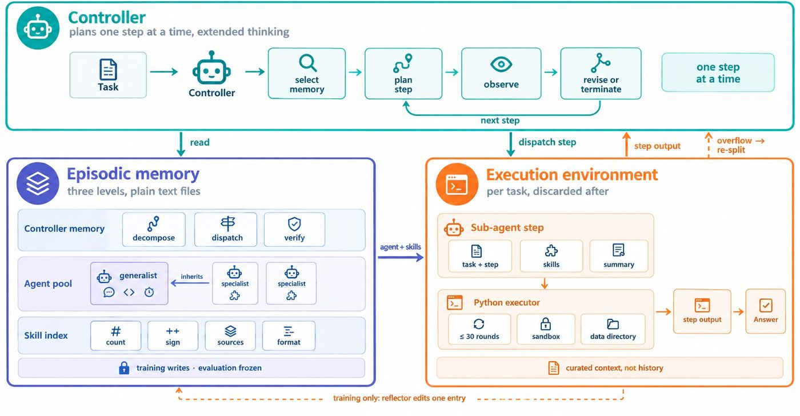
LLM 기반 멀티 에이전트 시스템이 복잡한 도메인에 적응할 때 파라미터 재학습의 비용 문제와 에이전트 간 간섭 문제를 겪는다. EMMA는 구조화된 에피소드 메모리를 통해 컨트롤러의 라우팅 기록, 서브 에이전트 프롬프트, 스킬 절차를 기록하고, 작업 실패 시 리플렉터가 수정 대상을 정해 안전하게 업데이트하는 방식으로 이를 해결한다. 파라미터 재학습 없이도 기존 베이스라인 대비 최대 32.5% 성능 향상을 달성하며 훈련 실행 횟수를 38% 단축한다.
핵심 포인트: 핵심 성과: 기존 최강 베이스라인 대비 최대 32.5% 성능 향상, 훈련 실행 횟수 최대 38% 감소, 비용이 많이 드는 파라미터 재학습 없이 복잡한 도메인 적응 실현.
논문 (Papers)
Memory Tax: 에이전트 메모리 vs 단순 RAG 성능 비교 연구
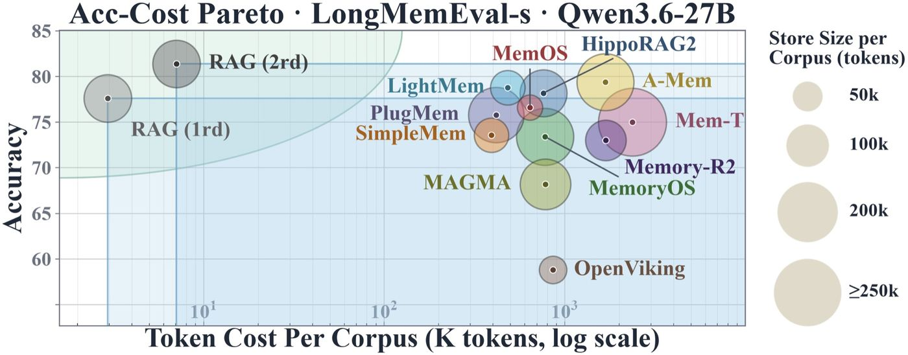
에이전트 시스템에서 복잡한 메모리 시스템을 구축할 때 발생하는 실제 가치를 분석한 연구. 여러 벤치마크에서 많은 전문 메모리 시스템이 원본 대화 기록에 대한 단순 RAG 검색보다 낮은 성능을 보이면서도 훨씬 높은 비용을 소모하는 문제를 발견했다. 메모리 시스템의 순 가치를 메모리 이득(RAG가 놓치는 질문)과 메모리 세금(메모리가 틀리는 RAG 정답)으로 분해하여 분석하고, 원본 기록과 메모리를 함께 검색한 후 재순위화하는 방식으로 성능 저하를 완화할 수 있음을 보여준다.
핵심 포인트: 핵심 성과: LongMemEval, PersonaMem, MINT-Eval 벤치마크에서 단순 RAG이 대부분의 전문 메모리 시스템을 능가하며, 메모리 처리 과정에서 발생하는 정보 손실과 검색 어려움이 메모리 세금의 주요 원인임을 규명했다.
논문 (Papers)
DEVTOOLS & OPEN SOURCE
terminal-mac — AI 에이전트용 독립 macOS 가상 환경
AI 에이전트가 사용자의 맥에 접근할 때 발생하는 보안 및 격리 문제를 해결하는 오픈소스 도구. Apple Virtualization을 통해 터미널 내에서 완전한 macOS 게스트 환경을 실행하며, 에이전트는 그 가상 맥에서 독립적으로 작업하고 사용자는 실시간으로 모니터링할 수 있다. 호스트 맥의 마우스, 키보드, 클립보드에 영향을 주지 않으면서 화면 제어 기능을 제공한다.
핵심 포인트: 핵심 기여: Apple silicon Mac에서 실행되는 완전 격리된 macOS 게스트 환경을 제공하며, MCP, CLI, 스킬 세 가지 방식의 컴퓨터 유스 기능을 기본 탑재하고 무료 오픈소스로 제공한다.
🔗 github.com/govijr/terminal-mac
GitHub
Hugging Face Exporters — 온디바이스 AI 모델 배포 간소화
온디바이스 AI 배포 시 모델 변환과 컴파일이 복잡한 문제를 해결하기 위해 허깅페이스가 새로운 Exporters 기능을 공개했다. 이 기능을 통해 Transformers 라이브러리의 비생성형 모델을 ExecuTorch, ONNXRuntime, OpenVINO 등 다양한 환경에 맞게 모델 코드 수정 없이 몇 줄의 코드만으로 내보내고 양자화할 수 있다.
핵심 포인트: 핵심 기여: 복잡한 모델 변환 프로세스를 간소화하여 개발자가 별도 코드 수정 없이 다중 배포 환경 지원, 온디바이스 AI 개발 진입 장벽 대폭 낮춤.
🔗 huggingface.co/docs/transformers/exporters
기타 (Others)
Claude Platform — 메시지 스레드로 장시간 에이전트 세션 35% 가속화
장시간 에이전트 세션에서 매 턴마다 전체 대화를 재전송해야 하는 문제를 해결하기 위해 앤트로픽이 메시지 스레드 공개 베타를 출시했다. 첫 요청 이후 새로운 메시지만 전송하는 방식으로 50만~100만 토큰 규모 요청에서 첫 토큰까지의 시간을 약 35% 단축했다. 스레드는 서버 메모리에 암호화되어 저장되며 5분 뒤 만료되어, 코딩 에이전트나 컴퓨터 사용 에이전트 같이 지연 시간이 중요한 작업에서 효과가 크다.
핵심 포인트: 핵심 성과: 50만~100만 토큰 규모 요청에서 첫 토큰까지 걸리는 시간(TTFT) 중앙값을 약 35% 단축. 토큰 사용량은 동일하지만 장시간 대화 세션의 응답 지연을 크게 개선했다.
🔗 platform.claude.com/docs/en/build-with-cl…
기타 (Others)
Stack Diagram — 한 문장으로 기술 스택을 아키텍처 다이어그램으로 변환
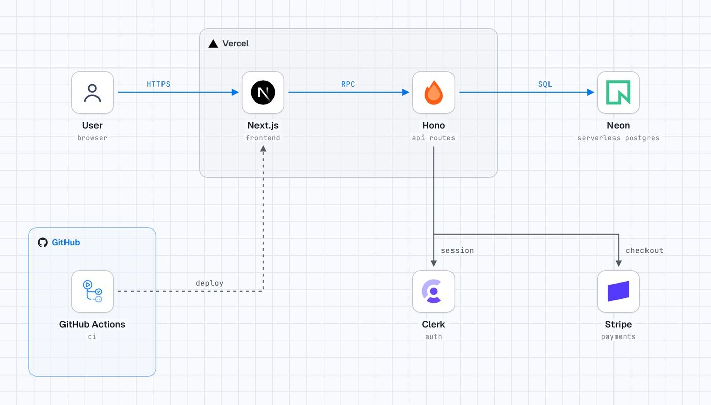
기술 스택 설계 시 직관적인 다이어그램 작성이 어려운 문제를 해결하는 AI 에이전트 스킬. 사용자가 기술 스택을 한 문장으로 설명하면 공식 로고를 포함한 아키텍처 다이어그램을 자동으로 생성한다. Claude Code, Cursor, Codex 등 주요 AI 에이전트 플랫폼에서 작동하며, 복잡한 설정 없이 간단한 명령어로 설치할 수 있다.
핵심 포인트: 핵심 기여: 텍스트 기반 스택 설명을 공식 로고가 포함된 전문적 다이어그램으로 즉시 변환하는 에이전트 스킬 제공. 다양한 AI 에이전트 플랫폼 간 호환성 지원으로 개발자 경험 통일.
🔗 github.com/caru-ini/stack-diagram
GitHub
agent-desktop — AI 에이전트를 위한 데스크톱 자동화 오픈소스 도구
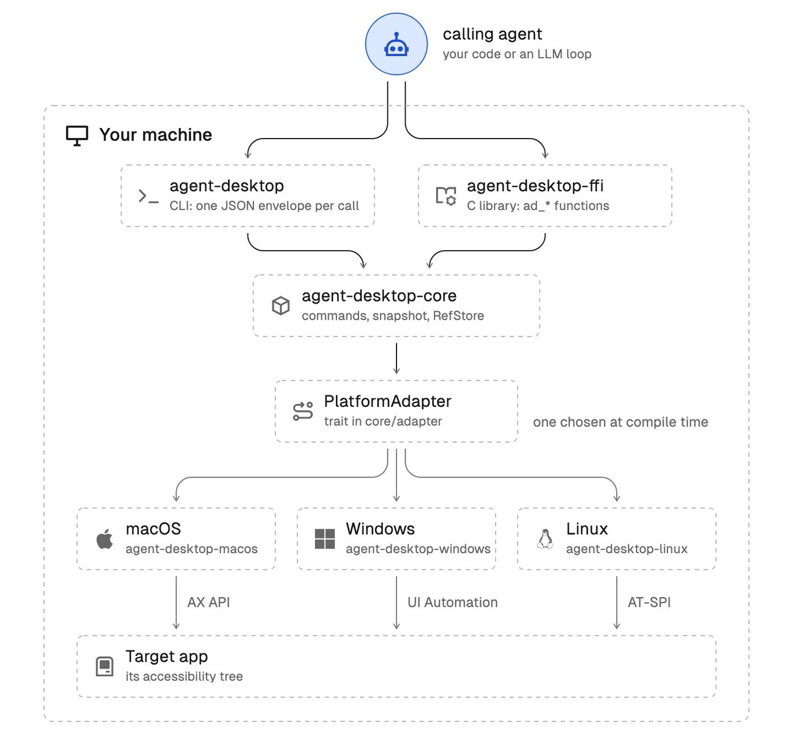
AI 에이전트가 스크린샷이나 픽셀 매칭 없이 데스크톱 애플리케이션을 직접 조작할 수 있도록 하는 오픈소스 도구. 접근성 트리를 JSON으로 읽고 각 UI 요소에 고유 참조값을 부여하여 에이전트가 클릭, 타이핑, 결과 확인의 루프를 반복하도록 지원한다. macOS, Windows, Linux를 지원하며 여러 AI 에이전트가 독립된 마우스 커서로 동시 작업 가능하다.
핵심 포인트: 핵심 기여: 스크린샷 기반 조작 대신 OS 접근성 트리 기반 접근으로 정확성 향상, CLI 및 C 라이브러리로 제공되며 npm으로 설치 가능한 크로스플랫폼 지원
🔗 github.com/vercel-labs/agent-desktop
GitHub
agent-rules-books — 개발 고전을 AI 에이전트 규칙으로 변환
AI 코딩 에이전트가 모델 성능은 향상되었으나 작업 관리와 시스템 연결에서 병목 현상을 겪고 있다. agent-rules-books는 클린 코드, 리팩터링, DDD, 클린 아키텍처 등 14권의 개발 고전에서 추출한 규칙을 에이전트 스킬 세트로 제공하여 이 문제를 해결한다. Full, Mini, Nano 세 가지 길이로 제공되어 컨텍스트 여유에 맞춰 선택 가능하며, 팀 코딩 원칙 수립의 출발점으로 활용할 수 있다.
핵심 포인트: 핵심 기여: 14권의 소프트웨어 엔지니어링 고전을 AI 에이전트 규칙으로 변환하여 모듈식 설치 가능한 스킬 세트로 제공. MIT 라이선스로 공개되어 Codex, Cursor, Claude Code 등 주요 에이전트 플랫폼에서 즉시 활용 가능.
🔗 github.com/ciembor/agent-rules-books
GitHub
herdr — 코딩 에이전트 멀티플렉서 공식 데스크톱 앱
여러 AI 코딩 에이전트를 동시에 실행할 때 각 에이전트의 상태를 개별적으로 추적하기 어려운 문제를 해결하는 멀티플렉서 도구. herdr는 한 화면의 사이드바에서 모든 에이전트의 작업 상태(진행 중, 대기, 완료)를 실시간으로 표시하며, 앱 종료나 업데이트 시에도 백그라운드 서버에서 에이전트와 터미널이 계속 실행되도록 보장한다. SSH를 통해 원격 머신의 에이전트도 같은 인터페이스에서 관리 가능하고, 설정과 레이아웃이 파일 기반이어서 에이전트 지시로 자동 수정이 가능하다.
핵심 포인트: 핵심 성과: macOS, Linux, Windows를 모두 지원하는 오픈소스 무료 도구로, 여러 코딩 에이전트 상태를 한 사이드바에서 추적하고 앱 종료 후에도 백그라운드에서 연속 실행 보장.
🔗 threads.com/@krr.no/post/DfHSiIwE-3S?xmt=…
기타 (Others)
Herdr — 에이전트 멀티플렉서의 데스크톱 앱과 새 엔진 공개
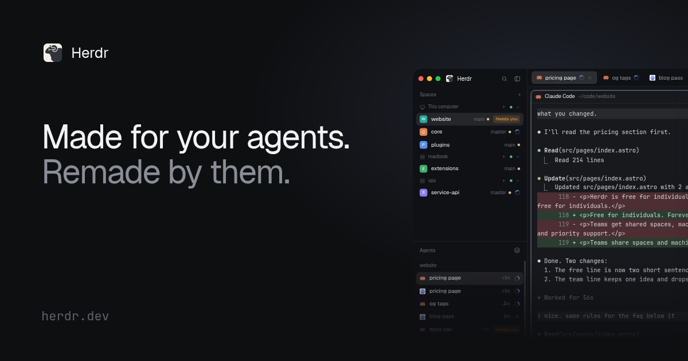
터미널 멀티플렉싱 도구들이 세션 관리와 에이전트 기능에서 한계를 보이는 문제를 해결하기 위해 Herdr가 새로운 접근 방식을 제시한다. 데스크톱 앱과 herdr-core 엔진을 Apache 2.0 오픈소스로 공개하며, 핵심은 모든 설정을 평문 파일로 관리하고 에이전트가 UI를 자동으로 수정하도록 열어두었다는 점이다. 앱을 닫거나 크래시가 나도 코어에서 실행 중인 터미널과 에이전트는 중단되지 않으며, SSH를 통해 원격 머신의 세션을 동일한 사이드바에서 관리할 수 있다.
핵심 포인트: 핵심 성과: GitHub 스타 4만 6천 개를 확보한 에이전트 멀티플렉서가 기능 경쟁이 아닌 아키텍처 혁신으로 차별화했으며, 앱 전체를 에이전트가 수정하도록 공개한 유일한 솔루션이다.
기타 (Others)
ENGINEERING
Pando — 오픈AI의 맞춤형 Git 백엔드, 푸시 지연 80% 단축
오픈AI의 Codex 개발로 인한 대규모 코드 저장소 부하 문제를 해결하기 위해 10주 만에 구축한 새로운 Git 백엔드. 브랜치별 독립적 업데이트 처리와 99% 이상의 지역 캐시 활용으로 푸시 지연을 중간값 기준 80% 감소시켰으며, 하루 1페타바이트에 가까운 코드 데이터를 안정적으로 처리한다. 기존 87%에 불과한 병합 성공률을 거의 100%로 개선했다.
핵심 포인트: 핵심 성과: 푸시 시간 80% 단축, 병합 성공률 87%에서 99.9% 이상으로 개선, 지역 캐시 99% 이상 적중률로 하루 800테라바이트 이상의 Git 데이터 처리
🔗 openai.com/index/scaling-git-at-openai/
기타 (Others)
Claude Code — AI 코드 리뷰 자동화로 병합 PR 2배 증가, 되돌림 40% 감소
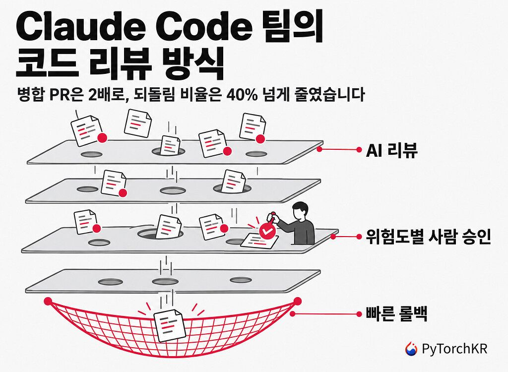
AI 에이전트가 코드의 90%를 작성하는 Claude Code 팀은 기존의 줄 단위 수동 리뷰로 감당할 수 없는 변경량 증가 문제를 해결하기 위해 코드 리뷰 프로세스를 재설계했다. 사전 검증, AI 리뷰, 보안 검사, CI, 위험도별 인간 승인, 병합 큐와 기능 플래그, 빠른 롤백으로 이루어진 6겹의 다층 검증 체계를 도입하고, 인간은 위험 판단과 배포 책임에 집중하도록 변경했다. 이를 통해 2026년 6월부터 9월 사이 병합 PR 수를 2배 이상 증가시키면서도 되돌린 PR의 비율을 40% 이상 감소시켰다.
핵심 포인트: 핵심 성과: 병합 PR 수 2배 이상 증가, 되돌림 비율 40% 이상 감소, 리뷰 1회차 통과율 65%에서 78%로 상승, 5회 이상 반복 리뷰 필요 PR은 8.9%에서 1.5%로 단축.
🔗 discuss.pytorch.kr/t/claude-code-pr-2-40…
기타 (Others)
리팩터링 — AI 시대 개발자의 필수 역량
AI 코딩 에이전트 시대에 개발자가 직접 코드를 작성하지 않더라도, 생성된 코드의 품질을 평가하고 개선하기 위해서는 리팩터링 지식이 필수라는 주장. 높은 응집성과 느슨한 결합도 같은 기본 원칙을 이해하지 못하면 초보자가 AI 에이전트라는 전문가를 이끌게 되는 역전된 상황이 발생하고 인지적 부채가 누적된다. 마틴 파울러의 리팩터링과 켄트 벡의 Tidy First? 같은 고전 저작을 다시 학습할 것을 강조한다.
핵심 포인트: 핵심 기여: AI 시대에도 코드 아키텍처의 기본 원칙(응집성, 결합도)을 이해하는 것이 AI 에이전트를 효과적으로 지도하고 기술 부채를 방지하는 핵심 역량임을 제시.
🔗 yozm.wishket.com/magazine/detail/4013/
기타 (Others)
PRODUCT & INDUSTRY
ClashControl — 건축가를 위한 IFC 기반 도면 읽기 및 프레젠테이션 웹앱
건설 현장에서 건축가들이 작업 도면을 읽고 클라이언트에게 제시하는 과정이 복잡한 문제를 해결하기 위해 개발 중인 프로젝트. IFC 파일 업로드 기능과 모델 내 요소 자동 감지 및 분류 기능을 제공하여 프레젠테이션을 간편하게 한다. 웹사이트와 모바일 애플리케이션으로 개발될 예정이며, 향후 추가 기능 확대를 계획하고 있다.
핵심 포인트: 핵심 성과: IFC 파일 형식 지원과 함께 모델 요소 자동 감지 및 분류 기능으로 건축가의 프레젠테이션 효율성을 개선하며, 향후 다양한 파일 형식 확대 지원 예정.
🔗 threads.com/@farhan_cahyadi24/post/DfHN1Z…
기타 (Others)
Anthropic Claude Ultra — 5시간 사용 제한 폐지
Claude의 최상위 요금제 Ultra에서 기존 5시간마다 발생하던 사용 제한이 완전히 폐지되었다. 월 200달러의 가격은 유지하면서 인증된 계정은 주간 한도 범위 내에서 끊김 없이 서비스를 이용할 수 있게 됨에 따라 헤비 사용자들의 작업 흐름이 크게 개선될 것으로 예상된다.
핵심 포인트: 핵심 성과: 기존 Max 20x에서 Ultra로 명칭 변경하면서 5시간 사용 제한을 폐지, 인증된 계정에서 주간 한도 내 무제한 사용 가능으로 사용자 경험 향상.
🔗 x.com/claudeai/status/2116220869479428500
기타 (Others)
Claude Code VS Code 확장 — SSH 백도어 악성코드 심겨 배포
Anthropic의 공식 Claude Code VS Code 확장이 Cursor 마켓플레이스에서 SSH 백도어 악성코드가 포함된 버전으로 배포되었다. 문제 버전 2.1.313은 확장 실행 시 자동으로 공격자 SSH 키를 시스템에 설치하고 역방향 터널을 열며, 재부팅 후에도 지속되도록 설계되었다. 약 5000명의 Cursor 사용자가 영향을 받았으며, 공격자 서버는 이미 차단되었다.
핵심 포인트: 핵심 피해: 버전 2.1.313이 약 11시간 동안 Cursor 확장 마켓에 노출되었고, 최대 5000명의 사용자가 SSH 백도어에 감염되었으며, 악성코드는 66줄 규모로 재부팅 후에도 지속 가능하도록 설계됨.
🔗 threads.com/@builder.moonz/post/DfH29OSGS…
기타 (Others)
A2A Protocol — AI 에이전트 간 통신의 공개 표준
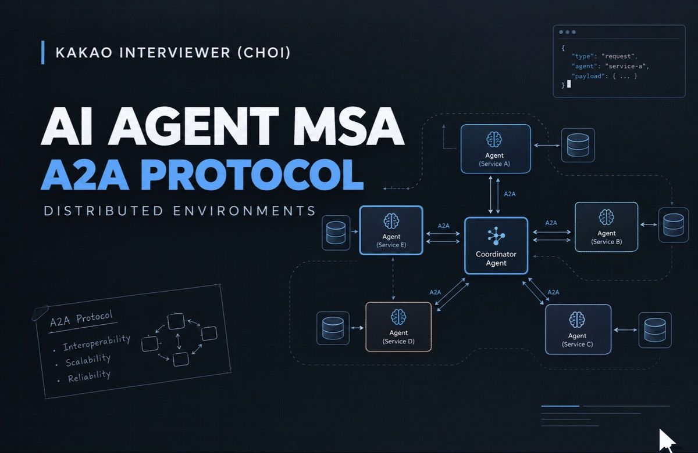
AI 에이전트들이 서로 다른 서비스와 프레임워크에서 안정적으로 통신할 때 발생하는 상호운용성 문제를 해결하기 위해 Google이 주도하여 개발한 AI Schema Protocol(A2A). 현재 Linux Foundation의 공개 표준으로 관리되고 있으며, Google, AWS, Microsoft 등 주요 클라우드 기업들이 기술운영위원회에 참여하여 각 제품에 A2A를 통합하고 있다. 2026년 3월 첫 안정 버전 v1.0 출시 예정이며, 이미 150개 이상의 조직이 지원 중이다.
핵심 포인트: 핵심 기여: 분산 시스템에서 AI 에이전트 간 통신을 위한 업계 공개 표준 수립. Google, AWS, Microsoft 등 빅테크 3사가 모두 기술운영위원회 참여 및 제품 통합 진행 중.
기타 (Others)
Kimi 3D Make — AI가 Blender·CAD로 3D 모델 직접 제작
3D 모델링 작업을 수동으로 수행해야 하는 번거로움을 해결하기 위해 Moonshot AI의 Kimi에 3D Make 기능이 추가되었다. Kimi는 Blender, CAD 같은 전문 3D 도구를 직접 제어하여 사용자의 명령에 따라 3D 모델을 생성하고, 장면을 구성하며, 게임을 개발할 수 있다. kimi.ai와 Kimi Work에서 즉시 사용 가능하며, 3D 웹사이트와 게임 제작, 세밀한 모델 생성, 3D 프린팅용 파일 내보내기 등 세 가지 주요 기능을 제공한다.
핵심 포인트: 핵심 성과: Kimi K3.1 Pro 모델이 Blender를 실시간 제어하여 재질 적용, 구조 수정 등 복잡한 3D 작업을 자동화하고, GLB·3MF 형식의 3D 프린팅 가능 파일을 한 번에 생성한다.
기타 (Others)
heyclicky — AI와 실시간 그래픽으로 대화하는 인터페이스
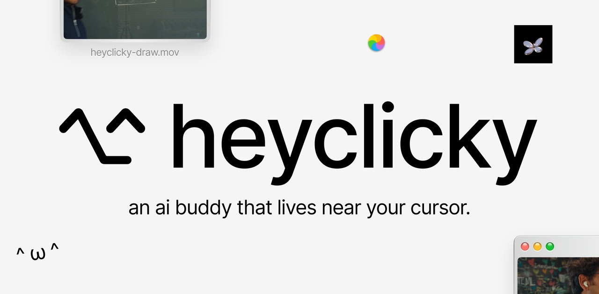
기존 텍스트 기반 채팅 인터페이스의 한계를 넘어, AI와 대화할 때 화면 위에 실시간으로 그래프, 도표, 조작 가능한 3D 장면을 생성하는 새로운 방식이 필요했다. heyclicky는 OpenAI의 o1 6.1 Ultrafast를 활용해 복잡한 개념을 시각 자료로 즉시 변환해주며, LLM 작동 원리나 하드웨어 개념 설명 시 움직이는 그래픽을 몇 초 안에 생성한다. 현재 Windows와 Mac에서 이용 가능하며 iOS 버전은 출시 예정이다.
핵심 포인트: 핵심 성과: OpenAI o1 6.1 Ultrafast 기반으로 텍스트 대신 실시간 그래픽 생성, 복잡한 개념을 시각화된 3D 장면과 애니메이션으로 수 초 내 표현 가능
기타 (Others)
Claude for Legal — 법무팀용 아티팩트 갤러리 공개
법무팀이 계약서 비교, 법률 문서 검토, 규제 추적 등의 업무를 효율적으로 수행하기 어려운 문제를 해결하기 위해 앤트로픽이 Claude for Legal에 법률 업무용 아티팩트 갤러리를 추가했다. 기본 예제로 제공되는 인터랙티브 도구들을 회사 문서 및 외부 서비스와 연결하여 맞춤형으로 수정하고 다른 부서와 공유할 수 있어 법무팀의 협업 효율성을 크게 향상시킨다.
핵심 포인트: 핵심 성과: 계약서 일괄 비교, 법률 문서 인용 오류 검증, 규제 변화 추적 등 세 가지 주요 법무 업무를 자동화하는 즉시 활용 가능한 아티팩트 갤러리 제공
🔗 claude.com/ko/resources/articles/introduc…
기타 (Others)